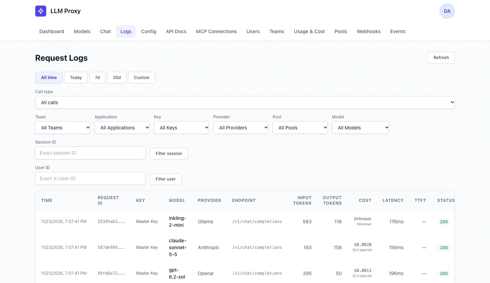

Issue keys per app
Restrict which models a key can call, revoke it independently, and attribute traffic to applications and teams.
Key managementSelf-hosted model gateway
Give each app its own key. Route OpenAI-compatible chat and Anthropic Messages through one Go service, with a record of usage and cost on each request.
Apps send a model alias. The proxy selects a configured deployment and keeps provider credentials on the server. Group compatible deployments under one alias for balancing and failover.
Read the configuration guidedraft
OpenAIgpt-5.4-mini
review
Anthropicclaude-sonnet-4-6
local-chat
Ollamallama3.2
Drill into a request to see which model served it, how many tokens it used, and where the cost figure came from.

Restrict which models a key can call, revoke it independently, and attribute traffic to applications and teams.
Key managementTrack calls, tokens, and spend over time. Inspect what an upstream reported and how each request was accounted for.
Request accountingServe embeddings and decision models, or give applications access to registered MCP servers through the gateway.
Decision models MCP gatewayQuickstart
Build with Go 1.25.4 or later. This example uses a local Ollama instance so you can try the proxy without a hosted API key.
Start Ollama and run ollama pull llama3.2 first. Save the example config as ollama.yaml in the cloned repository.
git clone https://github.com/pridkett/simple-llm-proxy.git
cd simple-llm-proxy
go build -o proxy ./cmd/proxy
export PROXY_MASTER_KEY="$(openssl rand -hex 32)"
./proxy -config ollama.yaml &curl http://127.0.0.1:8080/v1/chat/completions \
-H "Authorization: Bearer $PROXY_MASTER_KEY" \
-H 'Content-Type: application/json' \
-d '{"model":"llama3.2","messages":[{"role":"user","content":"Describe a fictional moon in one sentence."}]}'Once the listener starts, run the request in the same terminal. Run fg followed by Ctrl+C to stop the proxy.
Export OpenTelemetry spans to Simple Agent Tracer to see proxy calls alongside agent turns and tool activity.